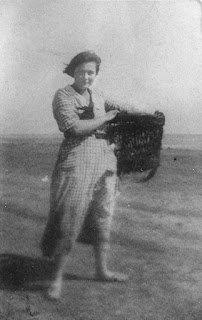
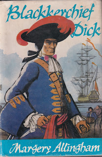
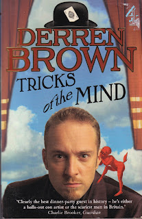

 |
| Margery Allingham on Mersea Island |
{kind=link}
Very few people these days have read Margery Allingham’s
first novel, Blackkerchief Dick, published in 1923 when she was aged 19.
They are probably wise, though for the uber-Allingham nerd, there are
definitely points of interest. But for anybody who writes
fiction, its genesis is surely fascinating.
The plot and characters for this first novel were, apparently,
‘given’ via a series of eight séances, initially undertaken by the Allingham
family as a summer holiday pastime on Mersea Island in August 1921. From the
first moment that I read through the slightly tired looking leaves of paper
with transcription in capital letters and blunt pencil, that survive in
Margery’s archive, I’ve felt convinced that here lies treasure for the literary
psychologist.
The word séance probably makes this sound more occult than
was intended. At its most basic level ‘playing the glass’ is a game. A wineglass or tumbler is placed on a table
and encircled by letters of the alphabet. (A Ouija board and planchette can
also be used.) Players sit round, usually at night and in semi-darkness, with
their fingers on the glass, and ask questions. These will be answered by a
‘spirit’ and the glass will move from letter to letter spelling out responses. According
to her father, Herbert, Margery had brought the idea home from school but had
refused to continue playing after a session in her recently deceased
grandparents’ home where the results had shocked her. Now she and her closest
family were staying in a rented house in Seaview Avenue, West Mersea. It was
evening, they were bored. She suggested they might have another try.
Margery’s father, Herbert, was a writer of melodramatic
serial stories; his friend George Mant Hearn, who also played, wrote boys’
adventures. Her brother Phil, aged 15, was the fourth player. He would later
earn his living as a cheapjack and fortune-teller, adept at illusion. Litle
sister Joyce had gone to bed and their mother, Em, sat out, disapproving of the
activity, possibly to Margery’s relief. Her relationship with her mother was
never easy. When Em came to the table, the spirits threw a tantrum. When
Margery left the table, the sessions petered out.
I can remember playing this game, late at night and against
the rules, on the polished wooden floor of an attic dormitory at a girls’
boarding school. We must have been 14-15 years old, nervy and giggly, very
ready to be spooked if our experiments showed results -- which they did, in
occasional small ways, quite enough to send us scuttling guiltily back to
bed. This was during the apparently safe
environment of the late 1960s; Margery and her companions were ‘trying the
glass’ in 1921 with the trauma of the Great War still manifesting itself like a
deep, dark bruise. There was a longing, then, for spiritualism to be true.
The initial surprise for the Allinghams that evening was how
quickly and surely the glass began to move. Herbert wrote later:
The glass began to move as soon as we touched it and we
found ourselves apparently in communication with a person called Joseph Pullen.
[…] After one or two unimportant questions and replies Hearn asked Pullen if he
knew anything about smugglers. This proved a happy suggestion. Pullen was an
old smuggler and after this he spoke freely.
Then someone (Margery) suggested asking about the Old
Ship Inn. On a previous visit to Mersea we'd heard a story about the Ship. The
building is now demolished but it was once a notorious smuggling centre. A
murder is said to have been committed there, and the place was reputed to be
haunted. There are still old residents on the island who will tell you that
they have seen the ghost. This much we knew when we asked the question that led
to such surprising results.
They played from ten o’clock that night until two in the
morning. They were all convinced that they were receiving ‘an actual account of
actual incidents which had occurred and of actual people who had lived on
Mersea island over 200 years ago’. To me, now, it seems very much more
significant that three of the four people at the table were, or would become,
fiction-writers.

{kind=link}
We questioned these about the affair at the Ship wrote
Herbert, and they all gave their evidence just as though they had been
witnesses in a police court case. As the story unfolded itself new facts came
to light and new actors in the little drama were mentioned. At subsequent
sittings we called up all those who seemed to have a bearing on the story and
questioned them in turn. Nearly all of them answered freely and during the
eight sittings we had communication from twelve different spirits, each one of
which had a distinct and strongly marked personality.
Though the players could all ask questions (and Em was
sufficiently interested to help transcribe the answers) it became obvious that
the flow of spirit answers somehow depended on Margery. Was she a medium?
Herbert was worried. The spirits were so convincing; so apparently ‘in period’,
so violent, so drunk. He couldn’t believe that Margery could know the words
they used. Margery said nothing to
counter this. She may have felt a deep sense of confusion herself. Was the
story being told through her – or by her?
Many writers of first novels have spoken of the way their
story seemed to write itself. There’s a magic in the way that fictional
characters can seem to take on a life of their own. Here’s Arthur Ransome
describing his initial experience of Swallows and Amazons. No writing
had ever made him so happy. ‘Up in the old barn. I used to wonder what was
going to happen and how. And while I was writing things came tapping out on the
paper that used to make me get up and walk about and chuckle. As if someone
were telling me a story instead of me writing one for other people.’
Perhaps we are all ‘mediums’ at times – but Margery’s
experience still appears extreme. When the Allinghams returned to London, Margery
accepted responsibility for whatever had happened by writing up the story they
had been ‘given’. Six thousand words of séance transcript became over fifty
thousand words of Blackkerchief Dick. A detective style interrogation became
an adventure story. New characters and incidents were introduced: the Island settings
were evocatively described; new quasi-seventeenth century violent language was
splurged across the pages – to such an extent that Sir Ernest Hodder-Williams,
publishing, asked for it to be toned down somewhat. Margery did as she was told,
but complained privately ‘because I do think pirates ought to be allowed to
swear, don’t you?’
Perhaps shy teenage girls should also be allowed to speak
out freely? In 1921 17-year-old Margery was studying drama and elocution at the
Regent Street Polytechnic. This was partially intended as remedial. She had
been a stammerer since early childhood. She called it her ‘ingrowing hobble’.
When she had arrived at the public auditions for entry to the elocution class,
she felt terrified. ‘Then, when the moment came and I stood up and looked at
the words before me, my whole mind panicked and shuttered and appeared to
explode, I do not know if there's any kind of baby bird that bursts from its egg
like a bomb but if so, I know what it feels like. My speaking voice shot out
naked and new and angry in a very cold and hostile world.’
From that day, writing and giving monologues was the part of
Margery’s education in which she could excel. Audiences listened, even when
Margery was fuelled by fear -- ‘I so frightened I did my piece better than
ever.’ She wrote and performed verse drama, went to Shakespeare at the theatre
with her father, studied Macbeth ‘with an absorption that was almost
physical’. It seems odd that neither she nor her father could admit that the
voices and the fruitily blasphemous language of the ostensible c17th ‘spirits’
was well within her range.

{kind=link}
The principle works like this. If you focus on the idea
of making a movement, will likely end up making a similar tiny movement without
realising it. If, undistracted, you concentrate on the idea of your hand
becoming light, you will eventually find that you make tiny unconscious
movements to lift it
. While you may be consciously aware that these movements
are happening, you are not aware that you are causing them. In the same way
that a nerve repeatedly firing can cause a twitch that feels outside your control,
so too an ideo-motor movement (from idea + movement) will feel that is
happening outside your control.
Brown describes the ease with which planting the seeds of an
idea within a suggestible group can get the glass rocketing about though with
no one aware they are responsible.
I suggested we contact a woman who I said had died in the
area recently. In fact, she was a complete fabrication and I invented some
details about her that we could use to check for proof. Sure enough, we had no
trouble contacting her, even though she had never existed, and had all the
details verified even though they were never true. When I told the others that
she lived in Clevedon, the glass spelled out exactly that. It took only a tiny
suggestion from me that there might have been some foul play for accusations of
murder to come through the board. (p47)
But doesn’t this bring us back to the deeper mystery -- the
capacity for invention within the human mind? And how fascinating ideomotor
movement is, if it enables the inventive capacity of the brain to communicate
directly with the fingers without any intervention by consciousness. We have
more physiological information about cerebral electricity, synapses and neural
pathways than was available to the Allinghams, yet we still feel surprised when
our pens ‘run away’ with us or when we find ourselves typing (or saying) things
that we haven’t consciously thought.
Margery described herself as ‘an intuitive writer whose
intellect trots along behind, tidying and censuring and saying “Oh My!”’ Her
last completed novel The Mind Readers (1965) shows she never quite lost
her sensitivity to the paranormal or her belief that explanations might not be
within the limits of language. ‘One takes a great risk by being entirely
comprehensible, I think,’ she wrote defiantly. Although the Mersea Island
seances took place more than one hundred years ago, and Blackkerchief Dick
would never have been brought back into print were it not for the success of
the Campion novels, yet, for this reader at least, its composition continues to intrigue.
The blog was developed from an essay published in the summer edition of Slightly Foxed and a talk given recently to the Margery Allingham Society.